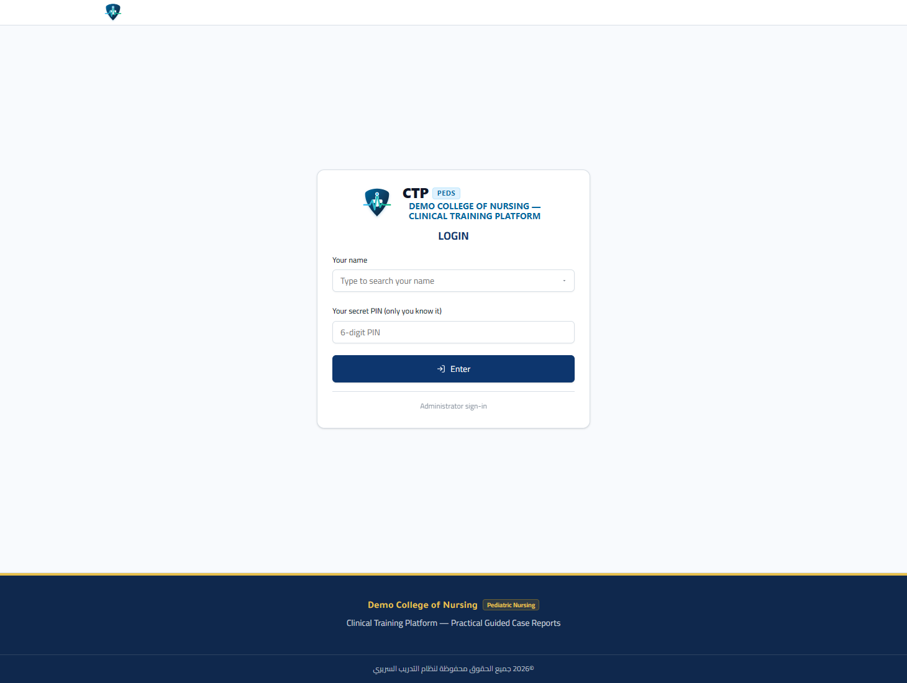
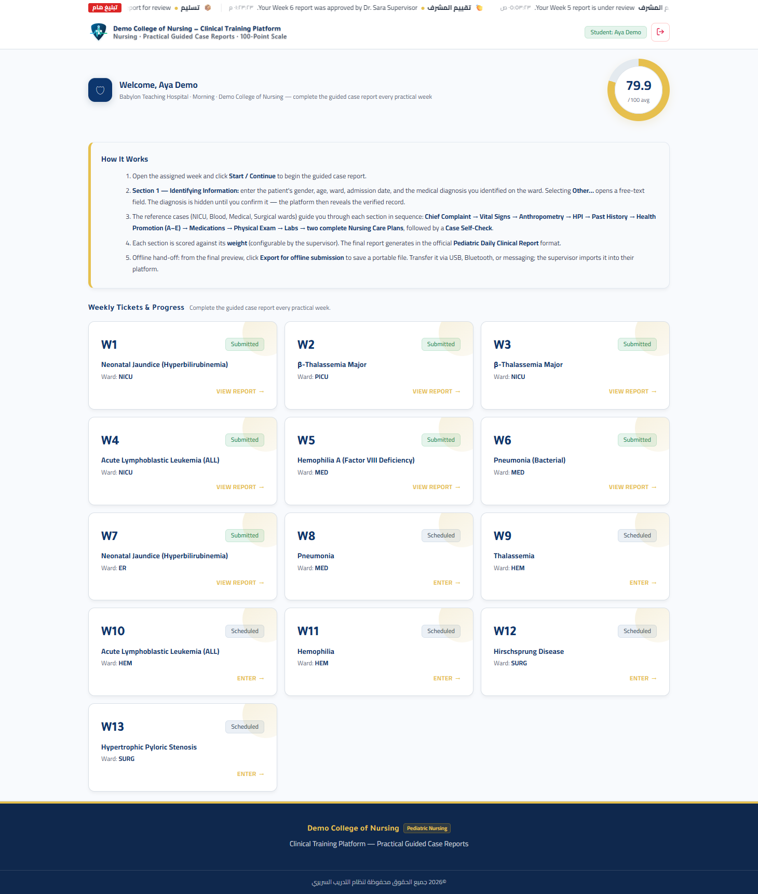
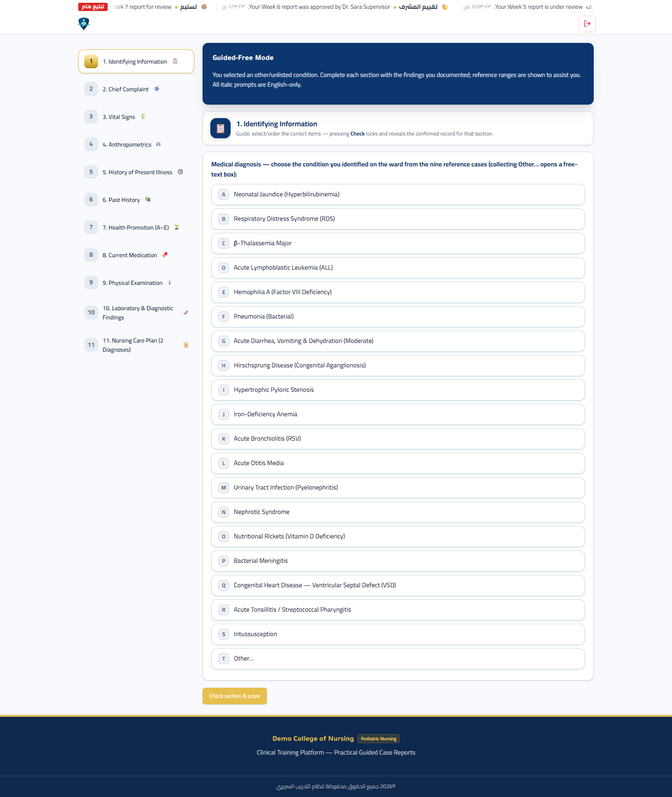
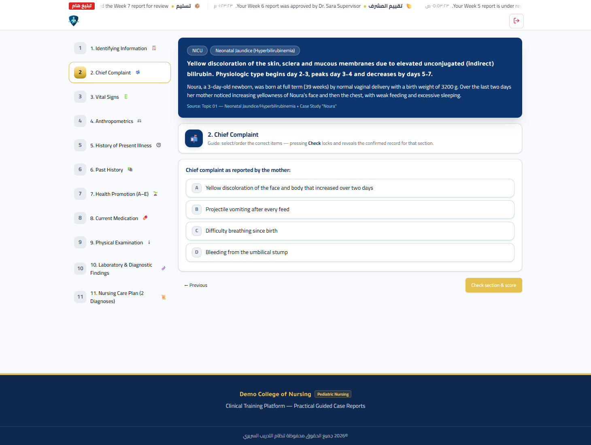
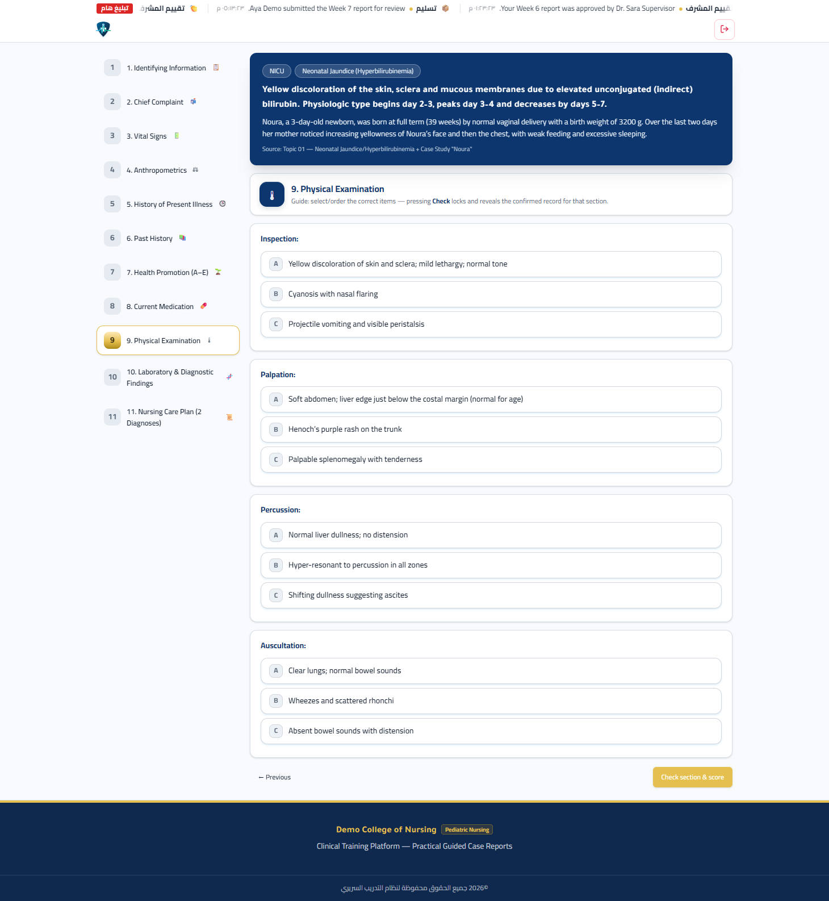
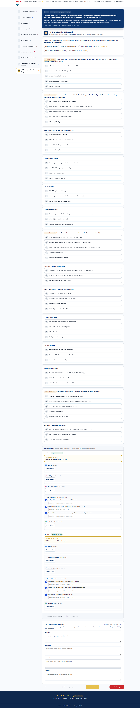
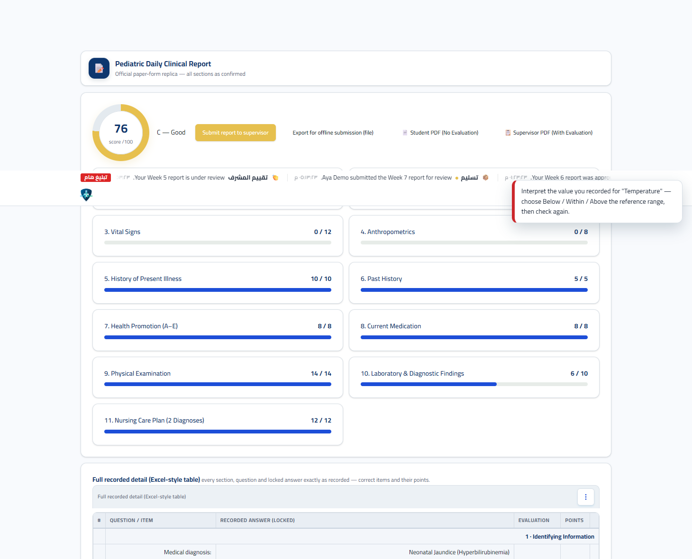
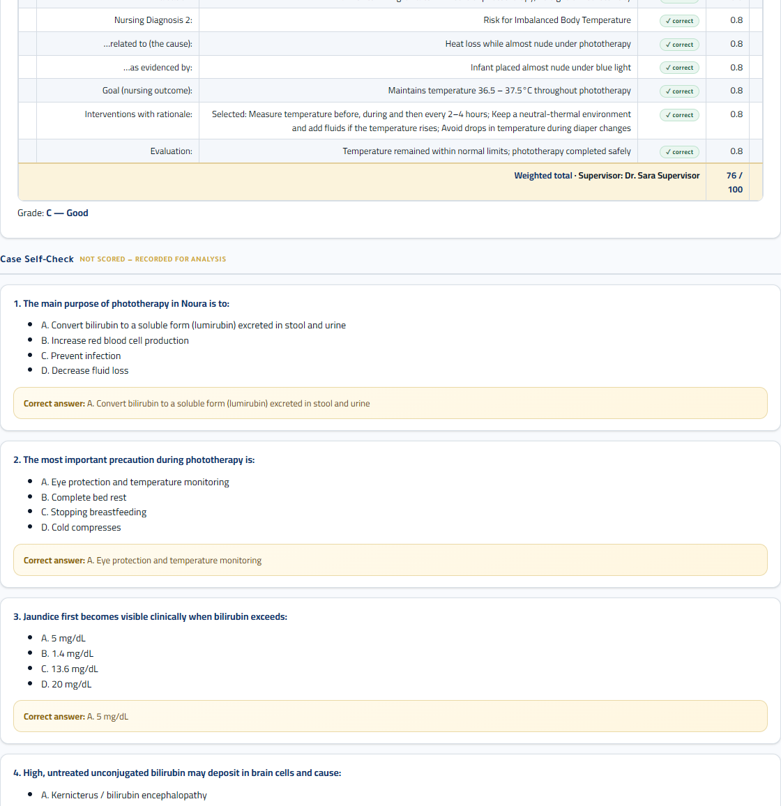
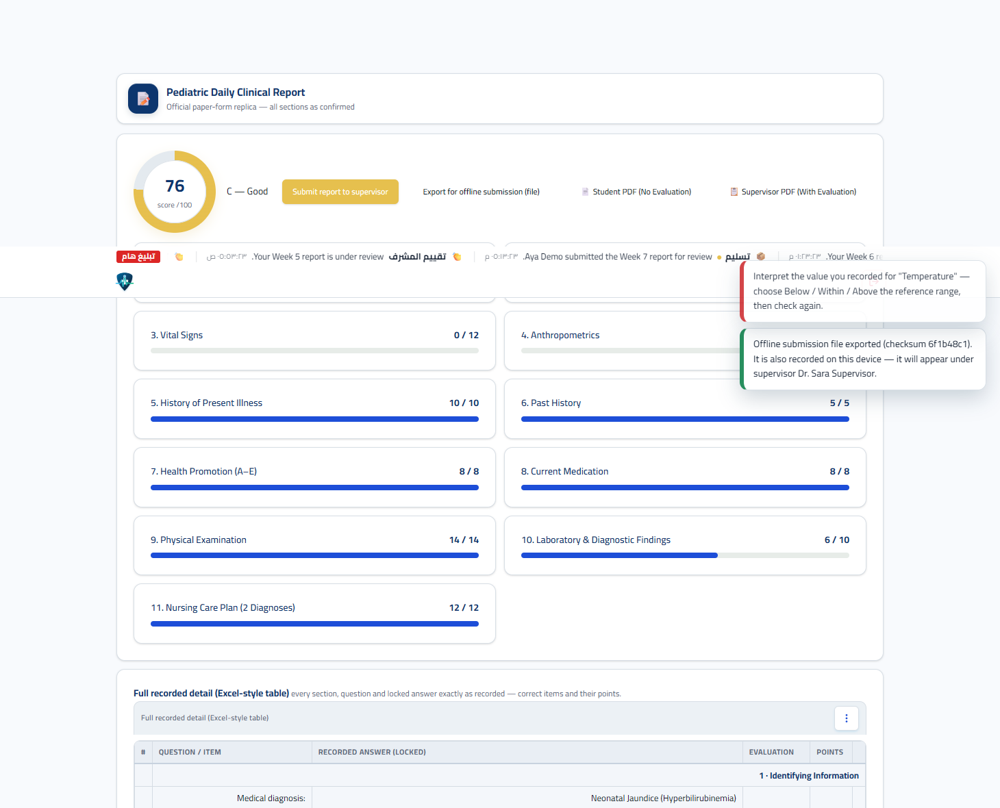
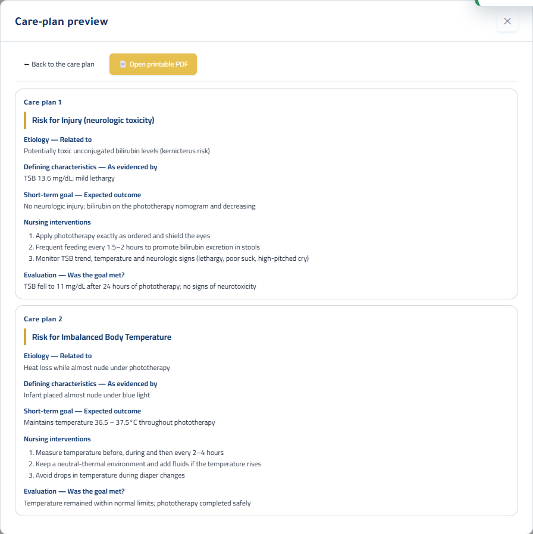

منصة التدريب السريري للأطفال
دليل الطالب خطوة بخطوة
ورشة عملية تأخذك من لحظة تسجيل الدخول حتى تسليم تقرير الحالة الأسبوعي: كيف تقرأ الحالة، وكيف تملأ الأقسام الأحد عشر، وكيف يقيّم النظام إجاباتك، وكيف تُدار المذاكرة الأسبوعية والتسليم.
1. المقدمة: ما هذه المنصة وما المطلوب منك
قبل أي نقرة على الشاشة، افهم الفكرة العامة للنظام حتى تعرف أين تضع جهدك العلمي.
هذه منصة تدريب سريري في تمريض الأطفال تعمل داخل المتصفح. جوهرها بسيط: كل أسبوع عملي يُنجز فيه تقرير حالة واحد بصيغة «التقرير السريري اليومي للأطفال» (Pediatric Daily Clinical Report). لا يطلب منك النظام مقالًا حرًّا، بل يمرّ بك عبر مسار موجَّه: تعرّف على الحالة، ثم وثّق الشكوى والتاريخ والفحص والعلامات الحيوية والقياسات والتحاليل، ثم ابنِ خطة رعاية تمريضية كاملة، ثم راجع نفسك.
الأهداف التدريبية للورشة
- أن تُنظّم عملك الأسبوعي وتُداريه عبر واجهة الأسابيع والتذاكر.
- أن تقرأ سيناريو الحالة علميًّا وتستخرج منه الأعراض والعلامات والبيانات.
- أن تُدخل بياناتك في أنواع الأسئلة المختلفة إدخالًا صحيحًا.
- أن تفهم قواعد التقييم: ما الذي يُحتسب، وما الذي يُسجَّل دون احتساب.
- أن تُسلّم التقرير بطريقة مضمونة عبر ملف «التسليم دون اتصال».
- أن تتجنّب الأخطاء الشائعة التي تُهدر درجاتك.
2. كيف يعمل النظام: نظرة سريعة
افهم الخريطة الكاملة قبل التفاصيل.
- تسجيل الدخول: شاشة واحدة. تختار اسمك من قائمة الطلبة ثم تُدخل رمزك السري المكوّن من ستة أرقام. النظام يعرف دورك تلقائيًّا.
- لوحة الطالب: ترى فيها اسمك ومستشفاك ودوريتك ومشرفك ومعدّلك التراكمي، وقائمة الأسابيع وحالة كل أسبوع.
- فتح أسبوع: بالضغط على بطاقة الأسبوع المتاح تبدأ المسار الموجَّه للحالة.
- الأقسام الأحد عشر: تنتقل بينها من الشريط الجانبي. في كل قسم أسئلة تُجيب عنها ثم تضغط «Check section & score» لقفله وتثبيت إجاباتك.
- التقرير النهائي: بعد اكتمال الأقسام يُبنى التقرير الرسمي وتظهر الدرجة والدرجة اللفظية.
- التسليم: تُصدّر ملف التسليم دون اتصال وتُسلّمه لمشرفك.
ما الذي يقيّمه النظام فعليًّا
| المحور | ما يُقاس | الأثر على الدرجة |
|---|---|---|
| الأقسام الأحد عشر | دقة التوثيق السريري في كل قسم | مجموع أوزانها 100 درجة |
| القياسات المُقاسة | دقة القيمة + صحة تفسيرها مقابل المرجع | تفسير خاطئ يُضيّع درجة البند |
| الفحص الذاتي (Self-Check) | أسئلة تقييم الفهم | لا يُحتسب — يُسجَّل للتحليل فقط |
| تشابه التقارير | نسبة التطابق مع تقارير أخرى | قد يُجمّد الدرجة ثم يجعلها صفرًا |
| الحضور | Present / Absent / Excused | تقييم حضور مستقل من 5 درجات |
3. تنظيم العمل الأسبوعي (Weekly Work Management)
النظام لا يعطيك كل الأسابيع دفعة واحدة؛ بل يُدار إيقاع العمل بالزمن وبالتذاكر.
حالة كل أسبوع في لوحتك
| الشارة (Badge) | المعنى | ما تفعله |
|---|---|---|
| Available | الأسبوع مفتوح ويمكنك البدء | اضغط البطاقة ثم «Enter» لبدء التقرير |
| Open now | أسبوعك الحالي المُخصّص (تذكرة) | هو أسبوعك المعتمد لهذا الأسبوع |
| Scheduled | لم يُفتح بعد حسب الجدول | ينتظر؛ سيظهر «Opens» بتاريخ الفتح |
| Closed | انتهى وقت الفتح | راجع مشرفك |
| Submitted | أُنجز التقرير وسُلّم | «View report» لمعاينة تقريرك المسلَّم |
نظام التذاكر (Ticket-based rotation)
عند تفعيله من قِبل الإدارة، تحصل على تذكرة أسبوعية تُحدّد عملك وموقعك لهذا الأسبوع، وتبقى الأسابيع الأخرى مُقنّتة (dimmed) ما لم تُنجز، حتى لا يتشتّت الطالب بين أكثر من حالة في آنٍ واحد. تنتقل التذكرة تلقائيًّا إلى الأسبوع التالي بمجرّد إنجاز الحالي.
البوابة الزمنية (Gate)
يضبط المشرف جدول فتح الأسابيع. إن كانت البوابة مُفعّلة فلن يُفتح أسبوع قبل موعده، وتظهر حالة «Opens:» بتاريخ ووقت الفتح. هذا يمنع تقديم تقارير خارج تسلسل التدريب.
4. الدخول إلى النظام
شاشة واحدة موحّدة لكل الأدوار؛ النظام يتعرّف على دورك من سجلك.
- افتح الرابط الذي يزوّدك به مشرفك على المتصفح.
- اكتب أول حروف اسمك في حقل الاسم لتظهر قائمة الطلبة، ثم اختر اسمك بالكامل.
- أدخل رمزك السري المكوّن من ستة أرقام في حقل
PIN. - اضغط زر الدخول. ستُنقل مباشرة إلى لوحة الطالب.

5. لوحة الطالب الرئيسية
هذه نقطة انطلاقك كل أسبوع؛ افهم مكوّناتها الأربعة.

1) شريط الترحيب
يعرض اسمك، ومستشفاك، ودوريتك (Morning/Evening)، والمؤسسة، واسم مشرفك. راجع أن هذه البيانات صحيحة.
2) حلقة المعدّل (/100 avg)
معدّلك التراكمي عبر الأسابيع المنجزة. تُحسب من درجات تقاريرك المُراجَعة.
3) صندوق «How It Works»
تذكير مختصر بتسلسل العمل: فتح الأسبوع، أقسام التقرير، ثم التسليم.
4) شبكة الأسابيع والتذاكر
قلب إدارة العمل: كل بطاقة أسبوع تحمل حالته وشارته، ومنها تبدأ أو تعاين تقاريرك.
6. فهم الحالة: كيف تقرأ السيناريو علميًّا
قبل الإجابة، تعلّم كيف تستخرج البيانات من بطاقة الحالة.
بمجرّد اختيارك للتشخيص في القسم الأول، يفتح النظام بطاقة الحالة (case card) في أعلى كل قسم، وتضمّ:
| العنصر | ماذا يمنحك |
|---|---|
| القسم المُدخَل إليه (Ward) | سياق الحالة: NICU، Blood، Medical، Surgical |
| عنوان الحالة (Title) | اسم التشخيص السريري |
| الملخّص (Abstract) | وصف مختصر للمشكلة |
| السيناريو (Scenario) | القصة السريرية الكاملة التي تبني عليها إجاباتك |
| المصدر (Source) | المرجع العلمي للحالة |
مثال علمي مُشتقّ من مكتبة النظام: «اليرقان الوليدي» (Neonatal Jaundice)
السيناريو: «نورا، مولودة في تمام الحمل (39 أسبوعًا) بولادة طبيعية، وزن الولادة 3200 غ. لاحظت الأم خلال اليومين الأخيرين اصفرارًا متزايدًا في الوجه ثم الصدر، مع ضعف في الرضاعة ونوم زائد.»
كيف تقرأها؟
- العمر (3 أيام) + بدء الاصفرار بعد 24 ساعة + عدم وجود فقر دم واضح ⇒ نمط يرقيان فسيولوجي غير مقترن.
- التحاليل المرجعية: البيليروبين الكلي 13.6 ملغم/دل، المباشر 0.6 ملغم/دل ⇒ الجزء غير المباشر هو السائد.
- الخطر الأساسي: التسمّم العصبي (Kernicterus) ⇒ الأولوية العلاجية هي العلاج الضوئي (Phototherapy).
7. الأقسام الأحد عشر: الشرح والغرض العلمي
لكل قسم غرض علمي ووزن محدد. الشريط الجانبي يعرض الأقسام ويتتبّع المكتمل منها.
أوزان الأقسام
| # | القسم | English | الوزن |
|---|---|---|---|
| 1 | المعلومات التعريفية | Identifying Information | 8 |
| 2 | الشكوى الرئيسية | Chief Complaint | 5 |
| 3 | العلامات الحيوية | Vital Signs | 12 |
| 4 | القياسات الجسمية | Anthropometrics | 8 |
| 5 | تاريخ المرض الحالي | History of Present Illness | 10 |
| 6 | التاريخ المرضي السابق | Past History | 5 |
| 7 | تعزيز الصحة (أ إلى هـ) | Health Promotion (A–E) | 8 |
| 8 | الأدوية الحالية | Current Medication | 8 |
| 9 | الفحص السريري | Physical Examination | 14 |
| 10 | التحاليل والنتائج التشخيصية | Laboratory & Diagnostic | 10 |
| 11 | خطة الرعاية التمريضية (تشخيصان) | Nursing Care Plan | 12 |
| المجموع | 100 | ||
تختار الجنس، والفئة العمرية، والقسم المُدخَل إليه، وزمن الإدخال بالنسبة للبداية، وأهم عنصر: التشخيص الطبي الذي تعرّفت عليه. اختيار «Other…» يفتح حقل نص حر للوضع الموجَّه الحُر. لا يُكشف التشخيص الصحيح قبل تأكيدك، ثم يظهر السجل المعتمد.

تُصاغ الشكوى كما ذكرها المُبلِّغ (عادة الأم) بلغتها، لا بتشخيصك الطبي. مثال الحالة: «اصفرار لون الوجه والجسم ازداد خلال يومين».

تُدخل القيمة الرقمية (حرارة، نبض، تنفّس، إشباع الأكسجين) ثم تُصنّفها مقابل النطاق المرجعي: أقل من النطاق، ضمن النطاق، أو أعلى من النطاق. القيمة غير الطبيعية ليست خطأً في ذاتها؛ الخطأ هو قراءتها قراءة خاطئة.

وزن الولادة، والوزن الحالي، ومسجّل النمو. انتبه لوحدات القياس (غرام/كغم).
يُطلب منك ترتيب تسلسل الأحداث سريريًّا (order)، مع تصفية العناصر ذات الصلة. رتّبها زمنيًّا ومنطقي: من أول عرض إلى اللحظة الحالية.

تاريخ الولادة، والأمراض/العمليات السابقة، والحساسية، والتطعيمات.

خمسة بنود: اللعب والنشاط، النوم والراحة، التغذية، الإخراج، والأسنان واللثة. لكل بند خيار مطابق للحالة.

العلاج الأساسي المُوصف ومسؤوليات التمريض المرتبطة به. مثال: «العلاج الضوئي بالأشعة الزرقاء» و«تغطية العينين ومراقبة الحرارة أثناء الجلسة».

أربع مهارات: الفحص بالنظر (Inspection)، والجس (Palpation)، والطرق (Percussion)، والسماع (Auscultation). وثّق ما تجده فعليًّا في السيناريو.

أدخل قيم التحاليل (مثل البيليروبين الكلي والمباشر) وصنّف كل قيمة، ثم أجب عن أسئلة تفسيرية تربط القيم بالصورة السريرية (فسيولوجي مقابل مرضي).

أثقل القسم من حيث المحتوى: تبني تشخيصين تمريضيين. لكل تشخيص: الأولوية، والأدلة الداعمة، والسبب (related to)، والأدلة كما تظهر (as evidenced by)، والهدف، والتدخلات مع المبرّر (اختيار متعدّد)، والتقييم.

8. أنواع الأسئلة: كيف تُجيب عن كل نوع
معرفة نوع السؤال تُوجّه إجابتك وتحميك من فقدان الدرجات.
| النوع | كيف يظهر | قاعدة الإجابة |
|---|---|---|
| اختيار مفرد (Single) | خيارات بجانبها دوائر اختيار | خيار واحد صحيح فقط |
| اختيار متعدّد (Multi) | خيارات بجانبها مربّعات | اختر جميع الصحيحة دون أي خيار خاطئ |
| نص حر (Text) | حقل كتابة | يُسجَّل؛ وإن لم يكن له مفتاح إجابة فلا نقاط عليه |
| ترتيب (Order) | قائمة تُرتَّب | يجب أن يطابق ترتيبك الترتيب الصحيح |
| قيمة رقمية + تفسير | حقل رقم + قائمة تفسير | قيمة دقيقة + تفسير صحيح مقابل النطاق المرجعي |
| خطة الرعاية (NCP) | سلسلة أسئلة مركّبة | تشخيصان كاملان: سبب + دليل + هدف + تدخلات + تقييم |
9. زر «Check section & score»: ماذا يحدث عند الضغط
هذا الزر هو نقطة تثبيت إجاباتك وقفل القسم.
عند الضغط عليه، يقوم النظام بما يلي:
- يتحقّق من أن كل بند مُقاس يحمل تفسيرًا (إن لزم).
- يُقفل القسم ويُثبّت إجاباتك (Locked).
- يعرض «النتيجة»: سجل الإجابات المعتمدة، مع الإجابات المرجعية الصحيحة لهذا القسم.
- عند أي بند خاطئ، يعرض تلميحًا معرفيًّا (Knowledge hint) ومرجعًا علميًّا (Source reference).

تنبيه التفسير الإلزامي

10. التقرير النهائي: العلامة والدرجة
بعد اكتمال الأقسام وقفلها، يُبنى التقرير الرسمي ويُحسب السكور.

عناصر التقرير
- حلقة الدرجة من 100.
- الدرجة اللفظية (A إلى F).
- شريط لكل قسم يعرض المُحقَّق مقابل الوزن (مثال: 8 / 8).
- التقرير الورقي الرسمي (Paper Report) بكل الأقسام.
- الفحص الذاتي (Self-Check) في الأسفل.
الأزرار في التقرير
- Submit report to supervisor — للإرسال المباشر (يطلب تأكيد رمزك السري).
- Export for offline submission (file) — تصدير ملف التسليم (الطريقة المضمونة).
- Student PDF (No Evaluation) — نسخة الطالب دون تقييم.
- Supervisor PDF (With Evaluation) — نسخة المشرف مع التقييم.

11. الفحص الذاتي (Case Self-Check)
أسئلة تقيس فهمك للحالة، وتظهر في أسفل التقرير النهائي.
هذه الأسئلة لا تُحتسب في درجتك، لكن إجاباتها تُسجَّل للتحليل. استخدمها للتأكد من أنك فهمت الجوهر العلمي للحالة قبل التسليم.

اختبر نفسك: أسئلة حالة «نورا - اليرقان الوليدي»
1) The main purpose of phototherapy in Noura is to: — الغرض الأساسي من العلاج الضوئي:
2) The most important precaution during phototherapy is: — أهم احتياط أثناء العلاج الضوئي:
3) Jaundice first becomes visible clinically when bilirubin exceeds: — يظهر اليرقان سريريًّا عند تجاوز:
4) High, untreated unconjugated bilirubin may deposit in brain cells and cause: — ترسّب البيليروبين غير المعالج في خلايا الدماغ يسبب:
5) Physiologic jaundice in a term infant typically: — اليرقان الفسيولوجي في الوليد التام:
12. التسليم: كيف تُسلّم تقريرك بطريقة مضمونة
الطريقة المعتمدة في هذه الورشة: ملف التسليم دون اتصال.
- أكمل الأقسام الأحد عشر وقفلها.
- افتح التقرير النهائي وتأكّد من الدرجة والأشرطة.
- اضغط Export for offline submission (file).
- يُحفظ ملف التقرير على جهازك (بصيغة «.json») ويظهر تأكيد البصمة الرقمية (checksum).
- سلّم الملف لمشرفك عبر أي قناة (ذاكرة USB، بلوتوث، رسالة). المشرف يستورده من شاشة «Receive report files from students».

13. حالة التقرير بعد التسليم وملاحظات المشرف
بعد التسليم يصبح التقرير مقفلًا، وقد يضيف المشرف ملاحظات.
من لوحة الأسابيع، افتح أسبوعًا مُسلَّمًا بزر «View report» لترى:
- شارة Submitted & Locked (مسلَّم ومقفل).
- صندوق «Submitted Report Preview»: التقرير لم يعد قابلًا للتعديل إلا بإعادة فتح من المشرف.
- صندوق «Supervisor feedback on your submission»: حالة المراجعة (Approved / Needs revision) وملاحظة المشرف.

14. معاينة خطة الرعاية (Care-Plan Preview)
أداة مراجعة داخل قسم خطة الرعاية.
داخل قسم خطة الرعاية يوجد زر «Preview my care plan» يعرض ملخّصًا منظّمًا لخطّتي الرعاية (التشخيص، والأدلة، والهدف، والتدخلات، والتقييم). المعاينة لا تؤثر على الدرجة؛ غايتها مراجعة بنية خطتك قبل الفحص.

15. كيف تُحسب الدرجات
افهم قواعد التقييم لتوجّه جهدك بدقة.
أولًا: أوزان الأقسام (مجموعها 100)
تُوزَّع درجة كل قسم على بنوده المفتاحية (ذات الإجابة المرجعية)، ثم تُجمع الدرجات الموزونة للوصول إلى درجة التقرير من 100.
ثانيًا: قواعد تقييم البنود
| نوع البند | متى يُحتسب صحيحًا |
|---|---|
| اختيار مفرد | عند مطابقة الخيار الصحيح |
| اختيار متعدّد | عند اختيار كل الصحيح دون أي خاطئ |
| ترتيب | عند مطابقة التسلسل الصحيح كاملًا |
| قيمة رقمية + نطاق | قياس دقيق + تفسير صحيح (أقل/ضمن/أعلى). القيمة غير الطبيعية ليست خطأً؛ الخطأ قراءتها قراءة خاطئة |
| قيمة رقمية بلا نطاق | يُقبل القياس المُسجَّل كدقيق |
| نص حر / بلا مفتاح | يُسجَّل ولا يُحتسب (لا يُمنح بلا مفتاح) |
| خطة الرعاية (NCP) | صحّة التشخيص والسبب والدليل والهدف والتدخلات والتقييم |
ثالثًا: الدرجات اللفظية
| الدرجة | المدى (من 100) | التقدير |
|---|---|---|
| A | 90 وأكثر | Excellent |
| B | 80 – 89 | Very Good |
| C | 70 – 79 | Good |
| D | 60 – 69 | Acceptable |
| E | 50 – 59 | Weak |
| F | أقل من 50 | Fail |
رابعًا: تشابه التقارير (Similarity)
يتحقّق النظام قبل التسليم من تشابه تقريرك مع تقارير أخرى:
- يُعرض التشابه المركّب (نص حر + أقسام): عند تجاوز الحد تظهر مطابقة.
- عند تشابه قوي قبل التسليم، يظهر تنبيه يُخيّرك: «أرسل على أي حال (تُجمَّد الدرجة للمراجعة)» أو «رجوع وتعديل».
- التقرير المُعلَّق يظهر بدرجة مجمّدة (0) حتى يقارن المشرف التقريرين.
- عند تأكيد الازدواج تصبح درجة الأسبوع صفرًا؛ وعند رفضه تُعاد الدرجة الطبيعية.
خامسًا: الحضور (Attendance)
| الرمز | المعنى |
|---|---|
| P | Present — حاضر |
| X | Absent — غائب |
| E | Excused — غياب بعذر |
تُحسب لك نسبة حضور ودرجة من 5، ويرتبط عدد الغيابات بمستوى إنذار (ملاحظة/إنذار أول/إنذار نهائي). تظهر لك لوحة «My Attendance» الخاصة بأسبوعك ودوريتك فقط.
16. جدول العمل الأسبوعي المقترح (روتين الطالب)
| المرحلة | ما تفعله | المخرج |
|---|---|---|
| قبل المحاضرة | راجع تشريح/فسيولوجيا الحالة والمراجع | فهم مبدئي للسيناريو |
| في الجناح | اجمع البيانات: الشكوى، العلامات الحيوية، القياسات، التحاليل | بيانات خام موثّقة |
| على المنصة | افتح أسبوعك، املأ الأقسام 1 إلى 11، وافحص كل قسم فور اكتماله | أقسام مقفلة |
| قبل التسليم | راجع التقرير، وراجع تفسير كل قيمة، وابنِ خطة الرعاية | تقرير مكتمل |
| التسليم | صدّر ملف التسليم دون اتصال وسلّمه للمشرف | ملف تقرير مُسلَّم |
| بعد المراجعة | افتح «View report» واقرأ ملاحظات المشرف | تحسين الأداء القادم |
أخطاء شائعة وكيف تتجنّبها
| الخطأ | النتيجة | التصحيح |
|---|---|---|
| فحص قسم قياسي دون تفسير القيم | رفض الفحص وتنبيه | صنّف كل قيمة (أقل/ضمن/أعلى) قبل الفحص |
| اختيار خيار إضافي في سؤال متعدّد | خسارة درجة البند | اختر ما يطلبه السؤال بالضبط |
| نسخ توثيق زميل | تجميد الدرجة ثم صفر | اكتب بكلماتك من سيناريوك |
| إهمال قسم ثقيل الوزن | انخفاض حاد في الدرجة | وزّع الجهد حسب الأوزان |
| محاولة فتح أسبوع غير مُخصّص | رسالة «locked» | أنجز أسبوعك الحالي ثم انتقل |
| إدخال وحدة وزن خاطئة | تفسير خاطئ للنطاق | تأكّد من الوحدة (غرام/كغم) |
قائمة تحقّق قبل التسليم
17. جدول المصطلحات (المقابل الإنجليزي لواجهة المنصة)
| العربية | English |
|---|---|
| المعلومات التعريفية | Identifying Information |
| الشكوى الرئيسية | Chief Complaint |
| العلامات الحيوية | Vital Signs |
| القياسات الجسمية | Anthropometrics |
| تاريخ المرض الحالي | History of Present Illness |
| التاريخ المرضي السابق | Past History |
| تعزيز الصحة | Health Promotion (A–E) |
| الأدوية الحالية | Current Medication |
| الفحص السريري | Physical Examination |
| التحاليل والنتائج التشخيصية | Laboratory & Diagnostic Findings |
| خطة الرعاية التمريضية | Nursing Care Plan |
| فحص القسم والتقييم | Check section & score |
| التقرير النهائي | Final report |
| الفحص الذاتي | Case Self-Check |
| التسليم دون اتصال | Export for offline submission (file) |
| مقفل | Locked |
| نطاق مرجعي | Reference range |